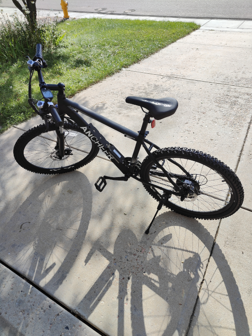
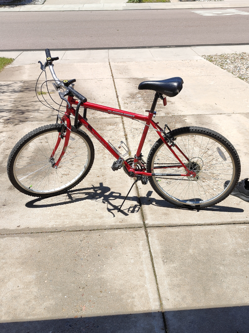
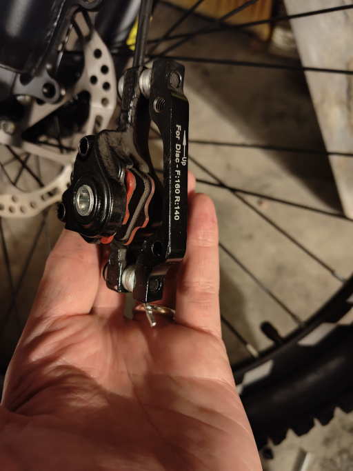
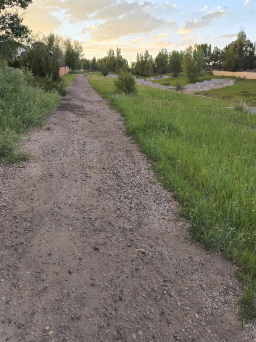
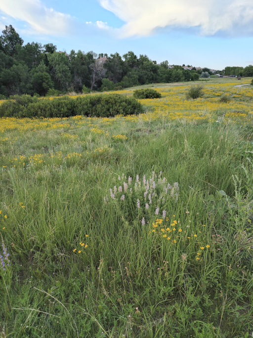
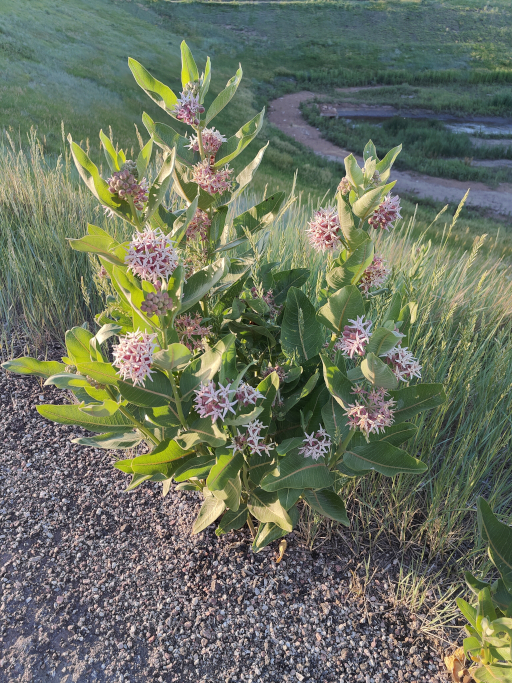

Biking

Biking is a hobby where a bicycle is used as transportation. I often go biking when the weather is warm to run nearby errands and get some fresh air. This is a photo of my current bike, it's an electric bike with both pedal assist and throttle. It's still a cheap model and has required a lot of maintenance, which is also a big part of the hobby.

This was my old bike, which I had before I upgraded to my current one. It was not an electric bike, and I sometimes jokingly refer to it as an "accoustic" bike. I obtained it long ago in high school and it required significant maintenance to use before it was eventually replaced. There are too many hills near me to get very far without the assist from an electric bike, so I opted to replace it.

Speaking of bike maintenance, this is the brake calipers for my new bike. Regular maintenance on a bike includes may items, including: the chain, the derailleur, the hub gear, the wheels, the brake pads, the brake disk, the brake lines, and more. Keeping everything in working order is important for both comfort and safety.

One of the best things about biking is what you can find while you're biking. Bikes are often able to get places that cars can't, so it's a fun way to see new sides of a neighborhood.

Getting away from the major roads usually means more greenery. There's lots of places like empty lots that overgrow and become beautiful in the warmer months.

Plant spotting is an excellent secondary hobby that I do when biking. I like to try and identify native plants I see when I'm out and about. The plant pictured here is likely showy milkweed, but I dont have the expertise to be certain. Learning about local plants while biking is a great way to feel connected to the place you live.